Prática 2.5 — Tensão Superficial (método do peso da gota)
Uma gota que cai sempre igual
0:00 · 78s · 6 ações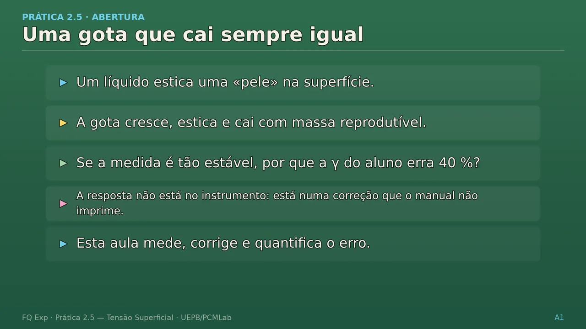
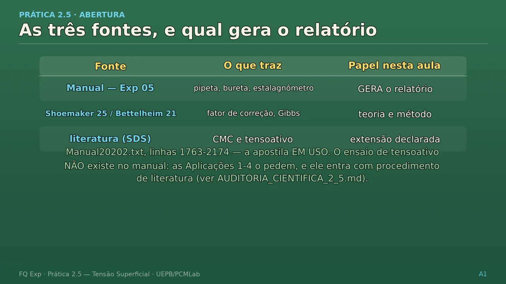
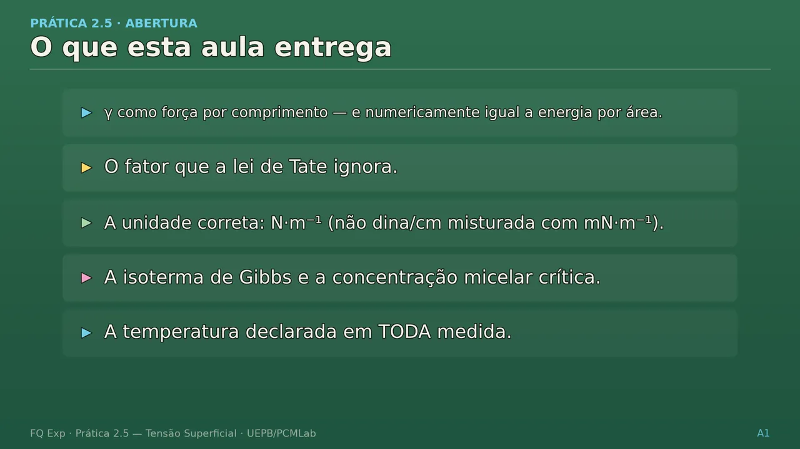
Uma gota cresce na ponta da bureta, estica e cai — sempre com a mesma massa, se a temperatura não mudar e a vidraria estiver limpa. Então por que a tensão superficial que quase todo aluno calcula sai quarenta por cento longe da tabela?
Três fontes, e o escopo é declarado. O experimento cinco do manual traz o procedimento: peso da gota com pipeta e bureta, e o estalagnômetro. A teoria do fator de correção e a isoterma de Gibbs vêm de Shoemaker e Bettelheim. O ensaio de tensoativo não existe no manual.
A aula entrega cinco coisas: a tensão superficial como força por comprimento e também energia por área; o fator que a lei de Tate ignora; a unidade correta; a isoterma de Gibbs e a concentração micelar crítica; e a temperatura declarada.
γ: força por comprimento ≡ energia por área
1:18 · 153s · 12 ações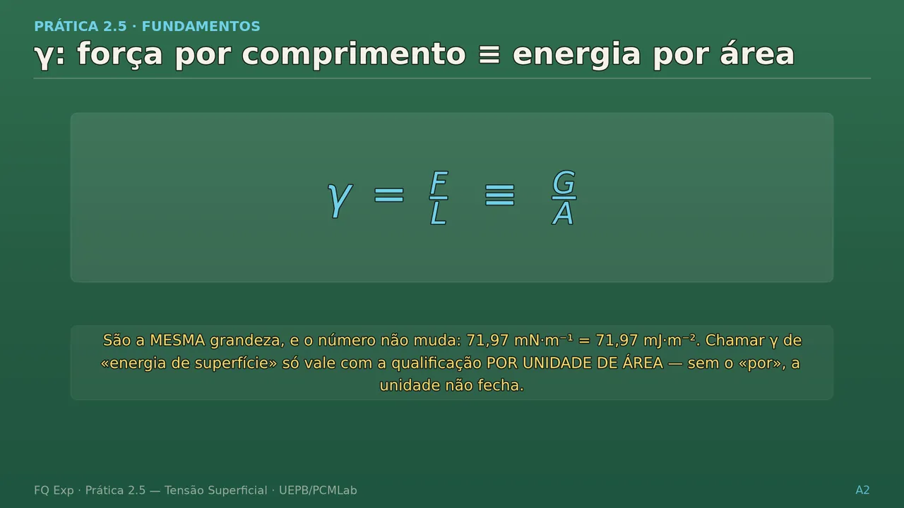
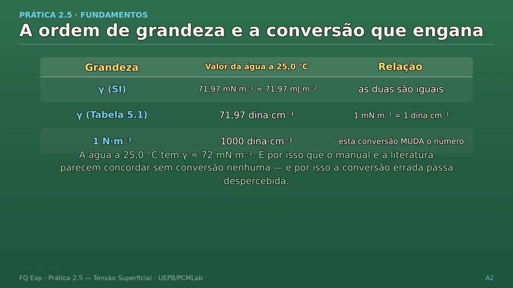
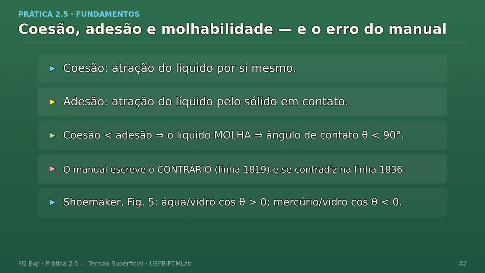
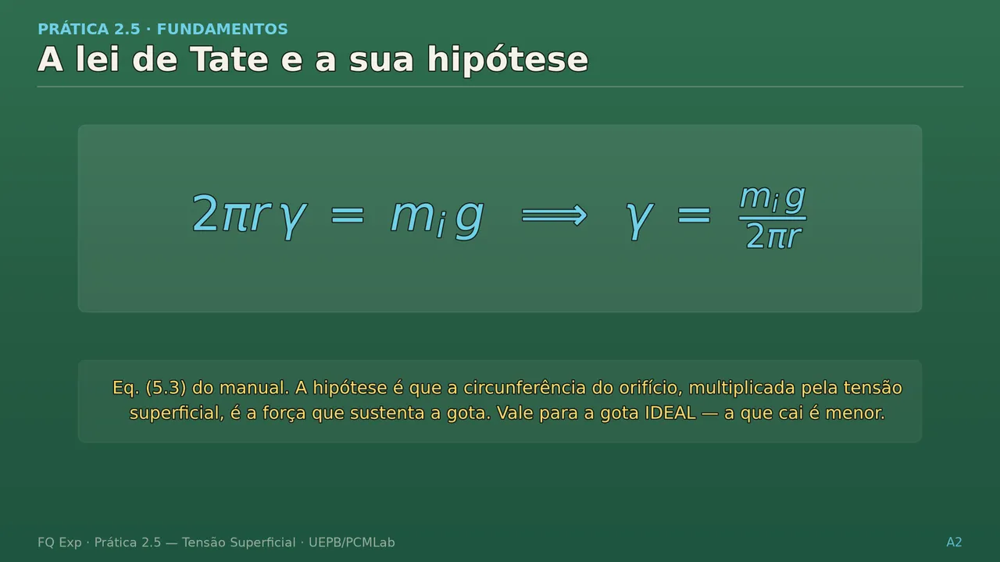
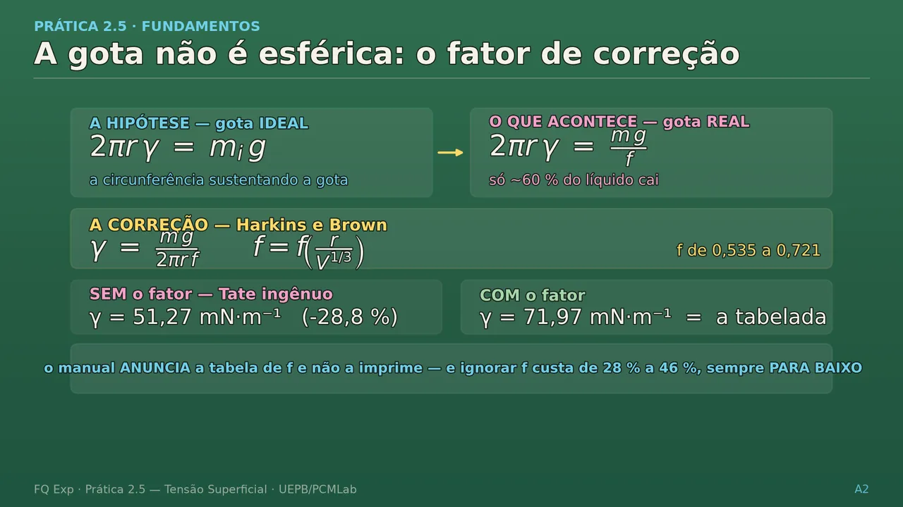
Tensão superficial é a força tangencial à superfície por unidade de comprimento: newton por metro. E aqui o ponto que quase todo material embaralha: ela é numericamente igual a energia por área. Setenta e dois milinewton por metro e setenta e dois milijoule por metro quadrado são o mesmo número.
A ordem de grandeza da água a vinte e cinco graus é setenta e dois milinewton por metro. A Tabela 5.1 tabula setenta e um vírgula noventa e sete dina por centímetro — o mesmo número, porque um milinewton por metro é uma dina por centímetro. Já um newton por metro são mil dina.
Aqui a apostila erra. Coesão é a atração do líquido por si mesmo; adesão, a atração pelo sólido. Se a coesão é MENOR que a adesão, o líquido molha o sólido e o ângulo de contato é MENOR que noventa graus. O manual escreve o contrário e se contradiz depois.
A lei de Tate supõe que a circunferência do orifício multiplicada pela tensão superficial sustenta a gota: força igual a dois pi r gama, equilibrada pelo peso. Na ruptura, gama é a massa da gota vezes g, dividida por dois pi r. É a equação cinco ponto três do manual.
Mas a gota que cai não é a gota ideal: a ruptura acontece abaixo do orifício, num diâmetro menor, e boa parte do líquido fica pendurada. Há um fator f, função do raio sobre a raiz cúbica do volume, que vai de zero vírgula cinquenta e quatro a zero vírgula setenta e dois. O manual anuncia a tabela e não a imprime.
▸ MONITOR(A) DO PCM LAB: Professor, se o fator f muda com o tamanho da gota, eu preciso saber de antemão quanto pesa uma gota para poder usar o fator?
Dois instrumentos, duas medidas
3:51 · 162s · 12 ações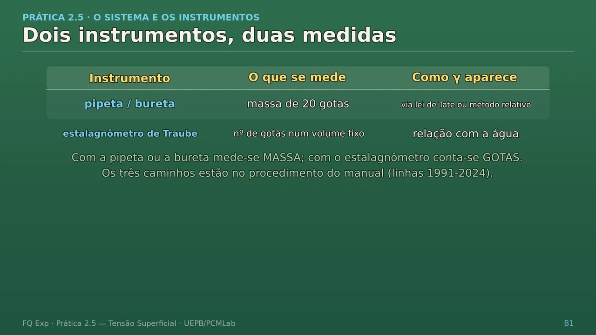
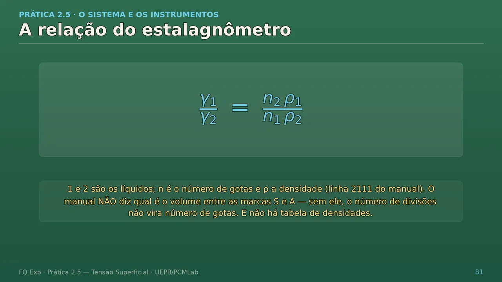
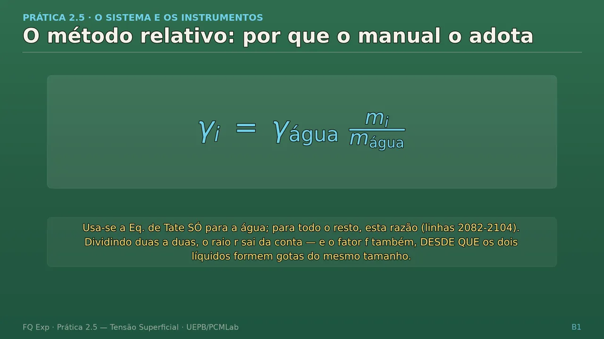
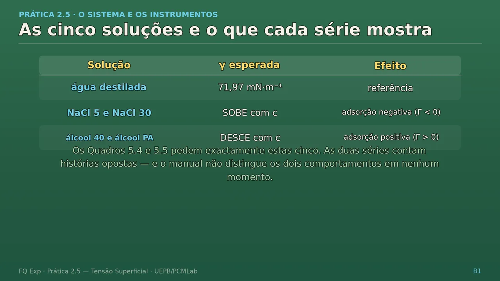
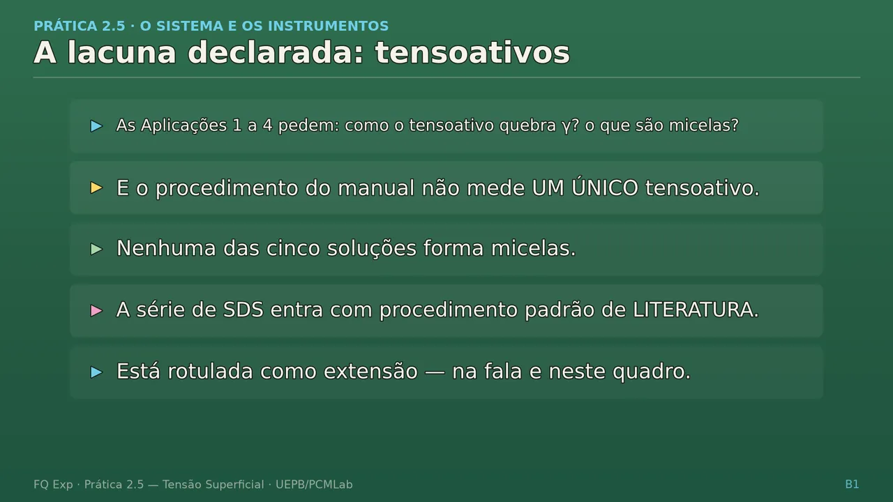
São dois instrumentos, e medem coisas diferentes. Com a pipeta ou a bureta você pesa a massa de vinte gotas e obtém a de uma gota. Com o estalagnômetro não se pesa: conta-se quantas gotas cabem num volume fixo. Os três caminhos estão no manual.
No estalagnômetro, o líquido escoa da marca S até a marca A, e você conta as gotas formadas. A relação é gama um sobre gama dois igual a n dois vezes rô um, sobre n um vezes rô dois. Só que o manual não diz o volume entre S e A — sem ele, as divisões não viram gotas.
É por isso que o manual manda usar Tate só para a água: nos outros usa o método relativo, gama do líquido igual a gama da água vezes a massa da gota do líquido sobre a da água. Dividindo um pelo outro, o raio sai da conta.
As cinco soluções dos quadros são água destilada, cloreto de sódio cinco e trinta, álcool quarenta e álcool PA. E as séries contam histórias opostas: o sal AUMENTA a tensão superficial da água, e o álcool DIMINUI, de setenta e dois para vinte e dois milinewton por metro.
▸ MONITOR(A) DO PCM LAB: Espera. No álcool a gota é três vezes menor que na água. O f ainda cancela mesmo assim, na conta do método relativo?
Agora a lacuna declarada. As Aplicações um a quatro perguntam como um tensoativo quebra a tensão superficial, o que são micelas, como se classificam os surfactantes. E o procedimento não mede um tensoativo. A série de detergente entra com procedimento de literatura, marcada como extensão.
Material e reagentes
6:33 · 58s · 4 ações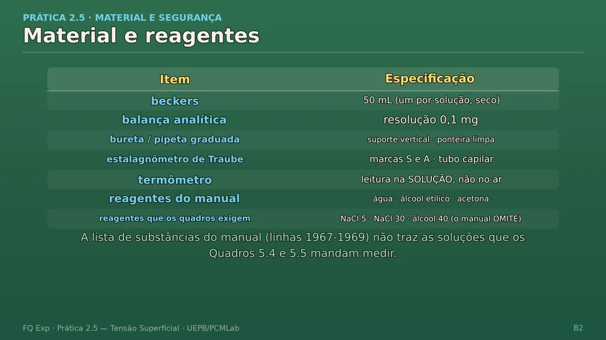
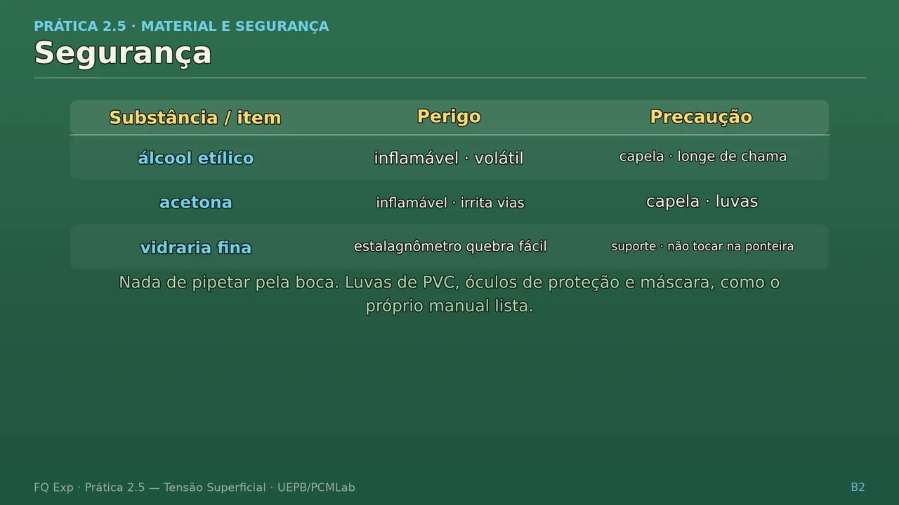
Material: beckers de cinquenta mililitros, balança analítica, bureta, pipeta graduada, estalagnômetro de Traube, termômetro e capela. Reagentes: água, álcool etílico, acetona — e as soluções de cloreto de sódio cinco e trinta por cento, que a lista do manual omite.
Segurança: álcool etílico e acetona são inflamáveis e voláteis — trabalhe na capela, longe de chama. Nada de pipetar pela boca. Luvas de PVC, óculos de proteção e máscara. E a vidraria é fina e cara de repor.
O passo que decide tudo: a limpeza
7:31 · 115s · 10 ações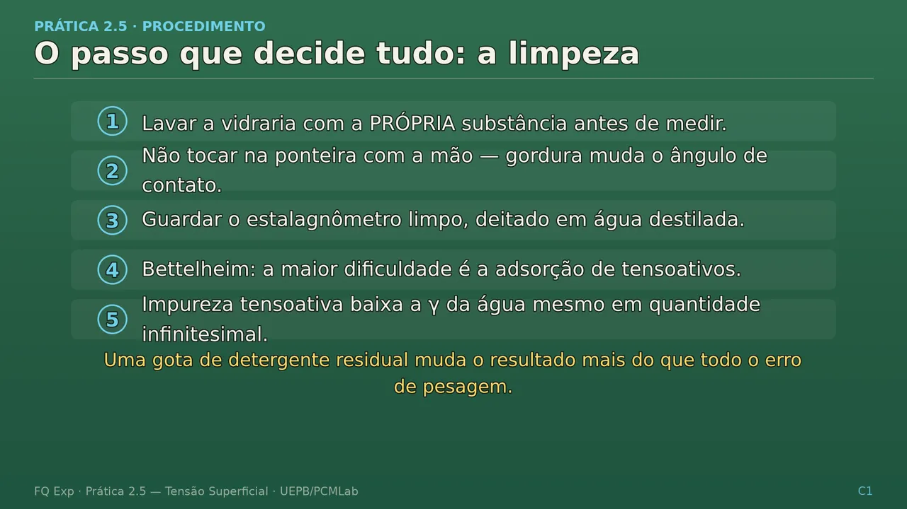
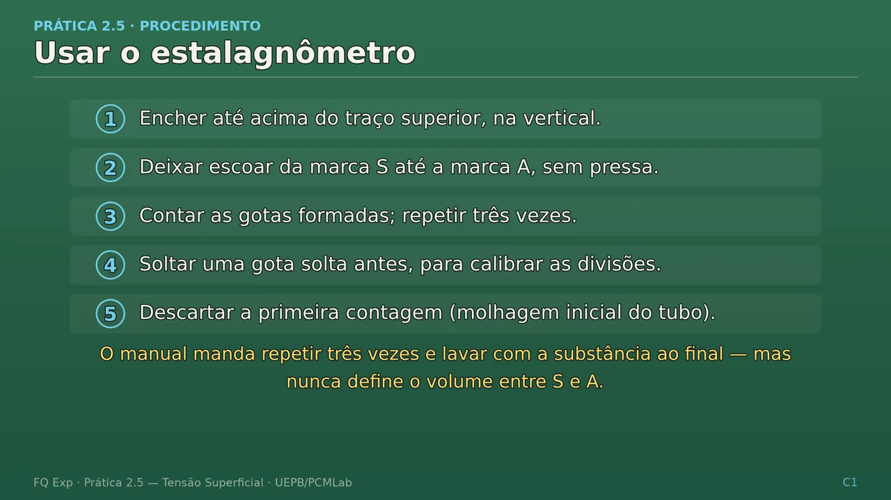
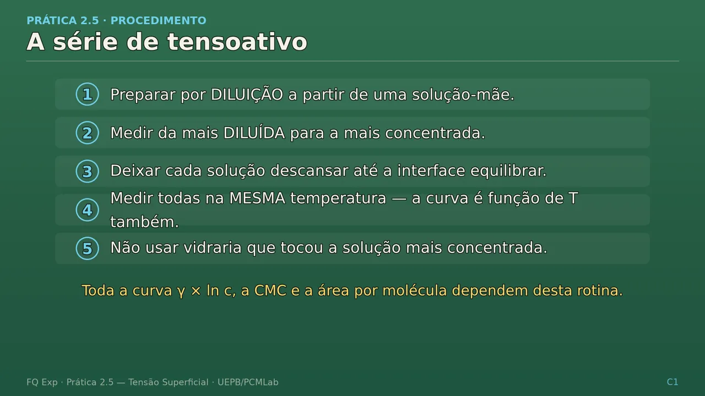
O passo que decide a qualidade de tudo é a limpeza. Betteleim é direto: a maior dificuldade em medir tensão superficial é a adsorção de substâncias tensoativas, que grudam na vidraria e baixam a tensão da água mesmo em quantidade infinitesimal. Lave com a própria substância.
Deixe pingar vinte gotas num becker seco. Pese. Repita três vezes, não duas, e use a média. O gotejamento tem de ser lento e igual nas três: se a gota cair rápido, a massa muda. Anote a temperatura da solução — não a do ar.
No estalagnômetro: encha até acima do traço superior, deixe escoar de S até A e conte as gotas. Repita três vezes. Antes de contar, solte uma gota solta e leia quantas divisões ela vale.
▸ MONITOR(A) DO PCM LAB: E por que pesar vinte gotas e não uma só? Uma gota na balança analítica não dava precisão suficiente?
Na série de tensoativo, comece pela mais diluída e vá subindo — assim você não contamina a mais fraca com a mais forte. Deixe cada solução descansar até a interface equilibrar, e meça sempre na mesma temperatura.
A planilha de dados (exemplo ilustrativo, 25,0 °C)
9:27 · 205s · 14 ações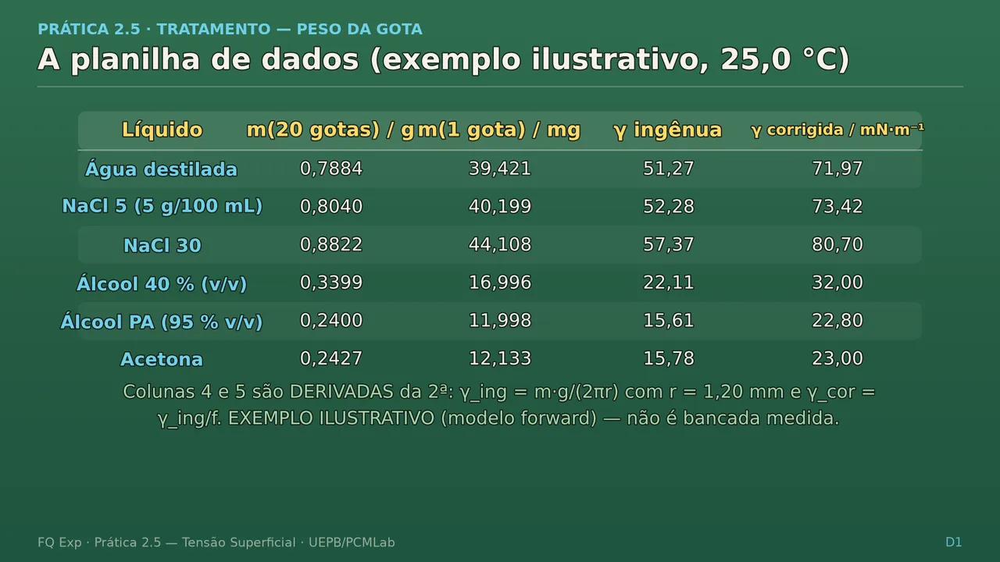
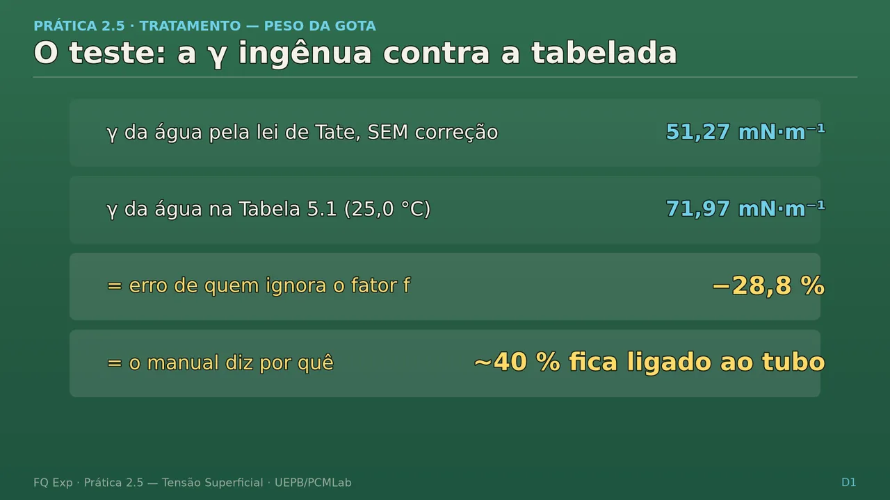
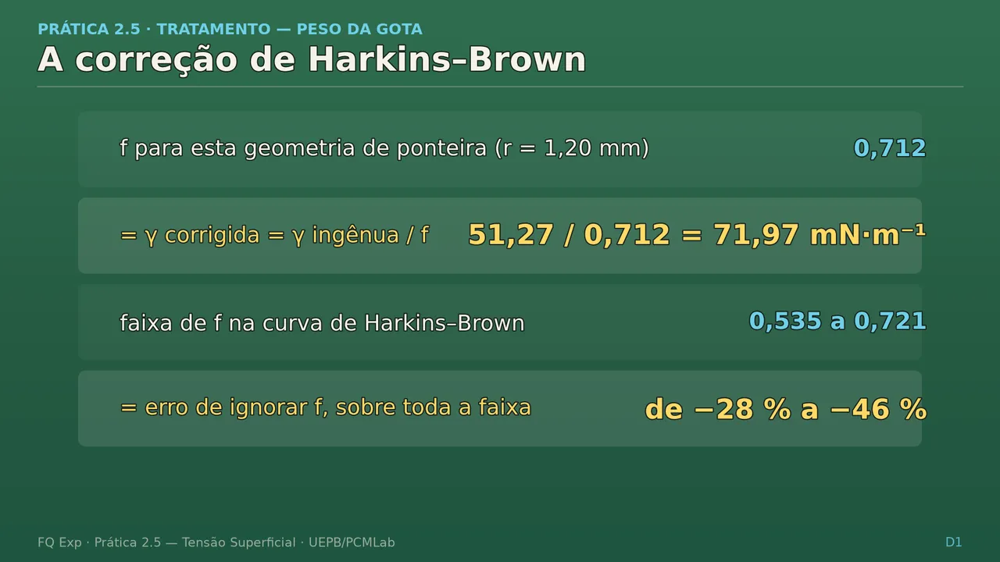
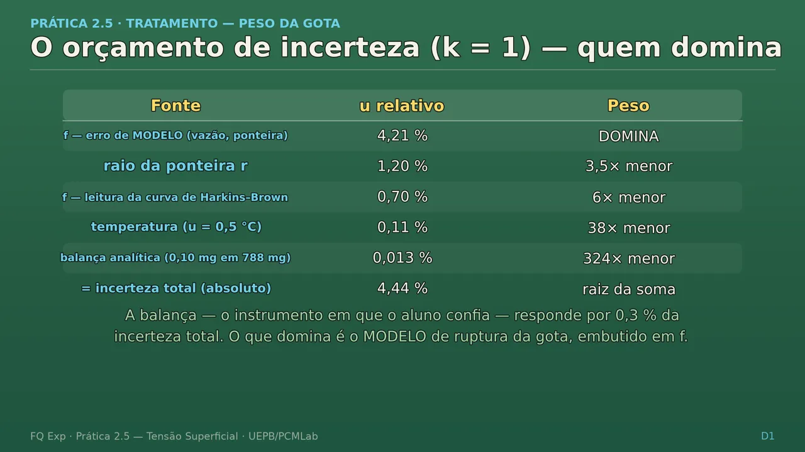
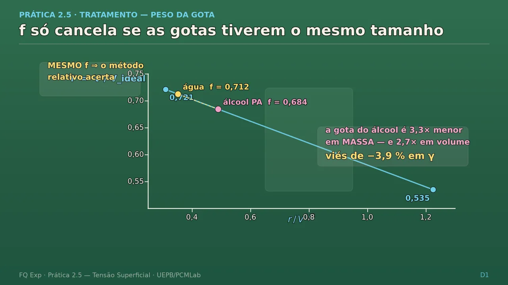
A planilha tem quatro colunas: líquido, massa de vinte gotas, massa de uma gota e tensão superficial. Exemplo ilustrativo a vinte e cinco graus: a água deu zero vírgula setecentos e oitenta e oito gramas nas vinte gotas, e o álcool PA, zero vírgula duzentos e quarenta.
Agora o teste. Jogando a massa direto na lei de Tate, a água dá cinquenta e um vírgula vinte e sete milinewton por metro. A tabela diz setenta e um vírgula noventa e sete. Vinte e nove por cento abaixo — e a resposta está no manual: quarenta por cento do líquido fica ligado ao tubo.
A correção é uma divisão: gama é massa da gota vezes g, sobre dois pi r f. Com f igual a zero vírgula setecentos e doze, cinquenta e um vírgula vinte e sete dividido por ele dá setenta e um vírgula noventa e sete. Na faixa de f, o erro de ignorar a correção vai de vinte e oito a quarenta e seis por cento.
E o orçamento de incerteza derruba uma intuição. A balança analítica, com zero vírgula um miligrama em setecentos e oitenta e oito, responde por zero vírgula zero treze por cento. O raio da ponteira, um vírgula dois. O fator f, quatro vírgula dois. A incerteza total é quatro vírgula quatro; a balança, zero vírgula três por cento dela.
Agora o método relativo: gama do líquido é gama da água vezes a massa da gota do líquido sobre a da água. Como o f sai da razão, a incerteza cai de quatro vírgula quatro para um vírgula quatro por cento — ganho de três vírgula duas vezes.
Hipótese escondida: o f só cancela com gotas do MESMO tamanho. A gota da água tem trinta e nove microlitros; a do álcool PA, quinze — em volume, duas vírgula sete vezes; em massa três vírgula três. O f muda de zero vírgula setecentos e doze para zero vírgula seiscentos e oitenta e quatro, e o álcool sai três vírgula nove por cento baixo.
▸ MONITOR(A) DO PCM LAB: Então o método que o manual manda usar no álcool é justamente o que carrega o viés de quatro por cento. É isso?
A isoterma de Gibbs
12:51 · 111s · 8 ações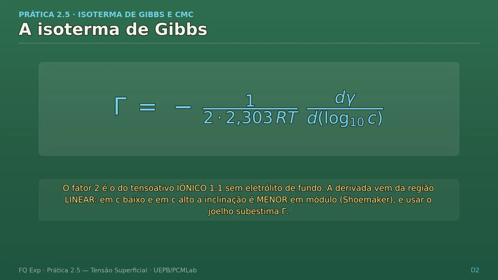
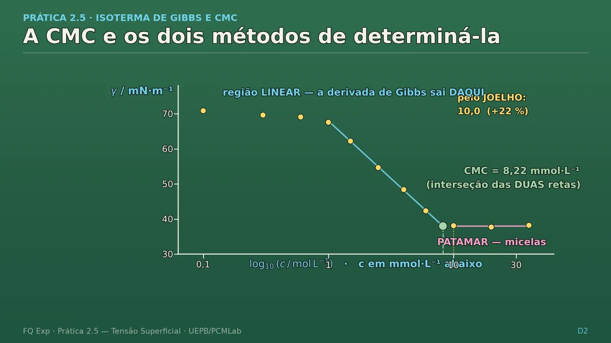
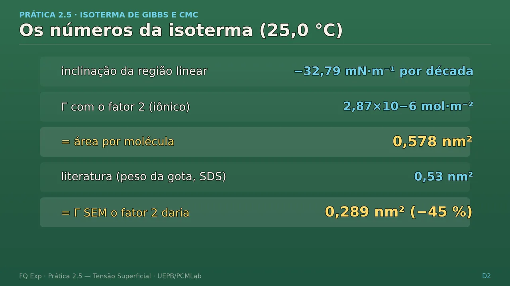
A isoterma de Gibbs: gama maiúsculo é menos um sobre dois vírgula trezentos e três R T, vezes a derivada da tensão superficial em relação ao logaritmo decimal da concentração. A derivada sai da região LINEAR, nunca do joelho: ali a inclinação é menor em módulo.
A concentração micelar crítica é o ponto em que a tensão superficial PARA de cair. Traçam-se duas retas, uma pela região linear e outra pelo patamar, e a interseção é a CMC. Nesta série deu oito vírgula vinte e dois milimol por litro, contra oito vírgula vinte aceitos; pelo joelho sairia dez.
E os números da isoterma. A área por molécula é o inverso de gama maiúsculo vezes o número de Avogadro. Com o fator dois da equação, o do tensoativo iônico, a área deu zero vírgula quinhentos e setenta e oito nanômetro quadrado, contra zero vírgula cinquenta e três da literatura. Sem ele, zero vírgula vinte e nove.
▸ MONITOR(A) DO PCM LAB: Aquela história da CMC: quem lê o gráfico a olho e pega a menor tensão sempre erra para cima, então?
O confronto com a Tabela 5.1 — e o que ela não cobre
14:43 · 123s · 8 ações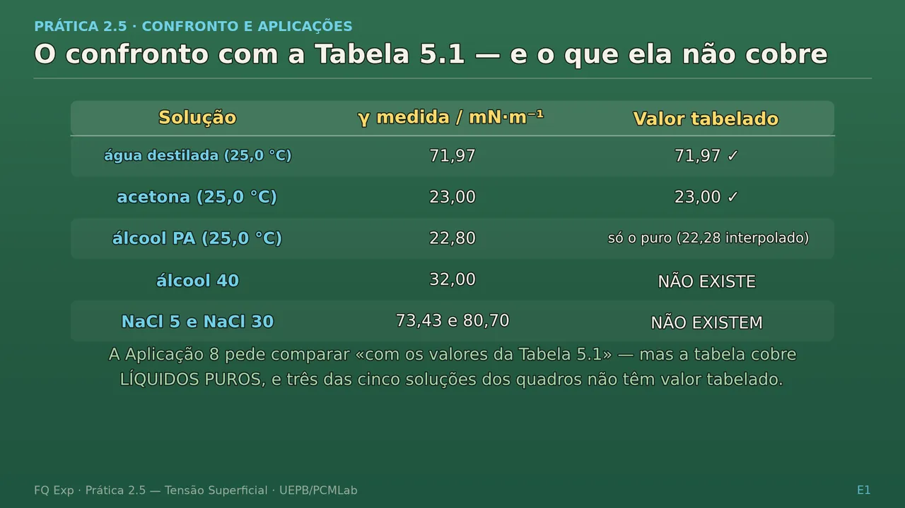
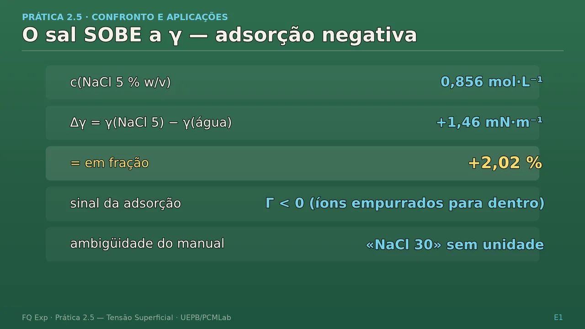
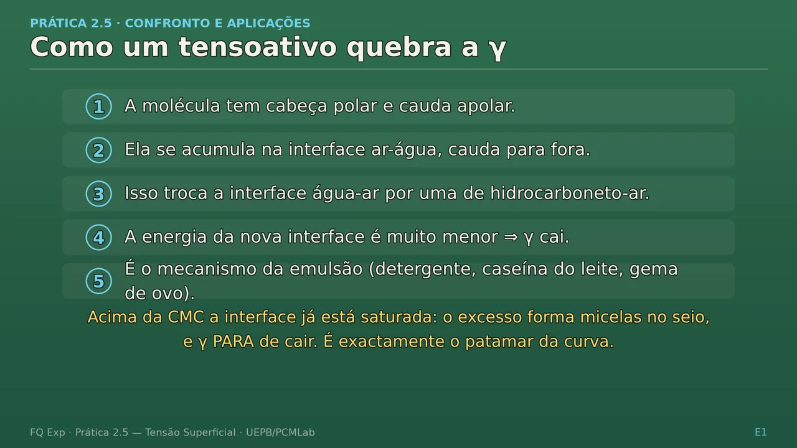
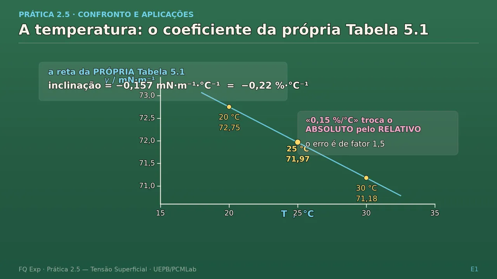
O confronto com a Tabela 5.1 fecha a conta para a água e a acetona. Mas a tabela cobre LÍQUIDOS PUROS: das cinco soluções dos quadros, três não têm valor tabelado nenhum. A Aplicação oito pede uma comparação que a própria tabela do manual não permite.
O sal merece atenção porque o sinal é contraintuitivo: cloreto de sódio AUMENTA a tensão superficial da água, o que significa concentração superficial NEGATIVA — os íons são empurrados para dentro. Em cinco por cento o efeito é um vírgula cinco milinewton por metro. E o manual escreve solução trinta sem unidade.
Como um tensoativo quebra a tensão superficial: a molécula tem cabeça polar e cauda apolar, então se acumula na interface com a cauda para fora da água. Isso troca a interface água-ar por uma de hidrocarboneto-ar, de energia muito menor. É o mecanismo da emulsão do detergente.
E a temperatura, o parâmetro mais traiçoeiro. Pela própria Tabela 5.1, a água cai zero vírgula cento e cinquenta e sete milinewton por metro a cada grau — zero vírgula vinte e dois por cento por grau. Ler isso como zero vírgula quinze por cento troca o absoluto pelo relativo e erra por um fator de um e meio.
Recapitulando a Prática 2.5
16:46 · 143s · 9 ações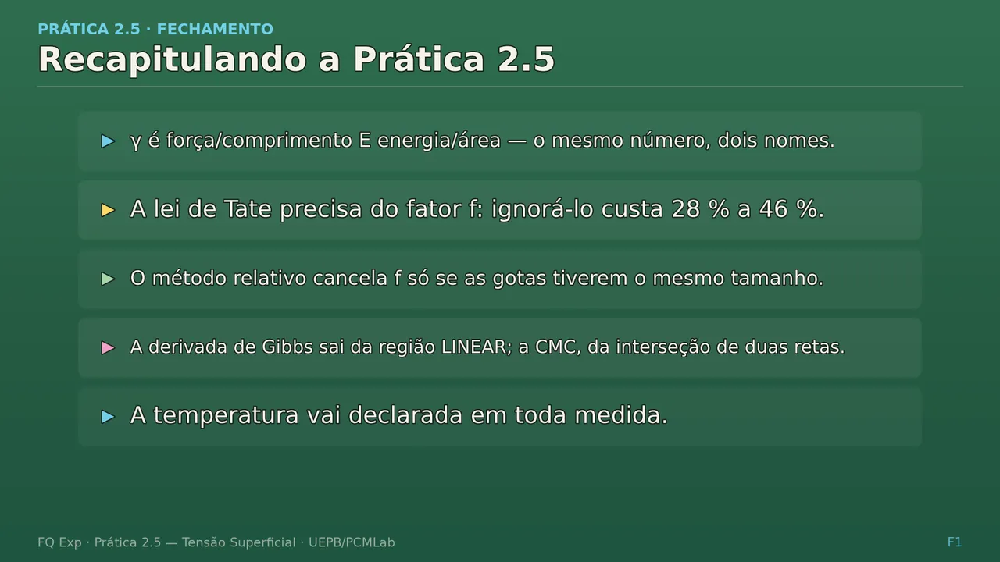
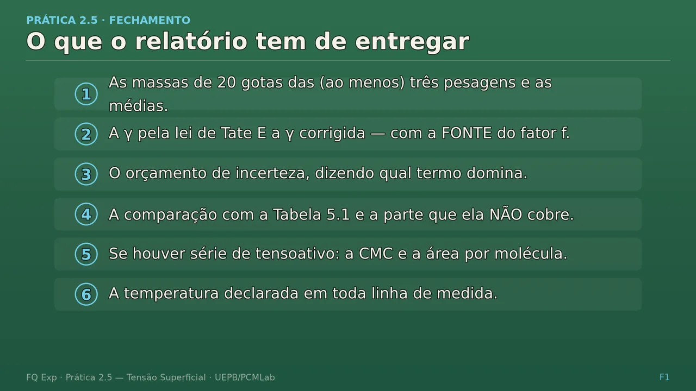
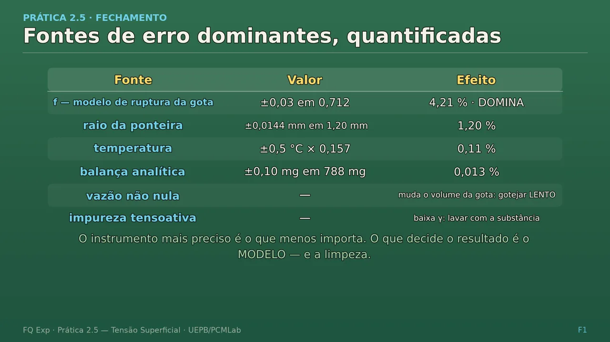
Recapitulando. Tensão superficial é força por comprimento e energia por área ao mesmo tempo. A lei de Tate precisa do fator de correção, e ignorá-lo custa quarenta por cento. O método relativo cancela o fator só se as gotas tiverem o mesmo tamanho. A derivada de Gibbs vem da região linear.
Auto-teste. Pause e responda. Um: por que a gama ingênua subestima e nunca superestima? Dois: por que o método relativo funciona bem para o sal e mal para o álcool? Três: qual termo domina a incerteza? Quatro: por que a derivada de Gibbs não pode sair do joelho? Cinco: por que declarar a temperatura?
PAUSE E PENSE Pause o vídeo e responda antes de continuar.
O relatório entrega as massas de vinte gotas das três pesagens e as médias; a gama pela lei de Tate e a corrigida, com a fonte do f; o orçamento de incerteza dizendo qual termo domina; a comparação com a Tabela 5.1 e o que ela não cobre; e, se houver tensoativo, a CMC e a área por molécula.
Fontes de erro dominantes. O fator de correção, quatro vírgula dois por cento, e dentro dele o modelo — vazão e formato real da ponteira — não a leitura da curva. O raio, um vírgula dois. A temperatura, zero vírgula um a meio grau. A balança, zero vírgula zero treze: o instrumento mais preciso é o que menos importa.